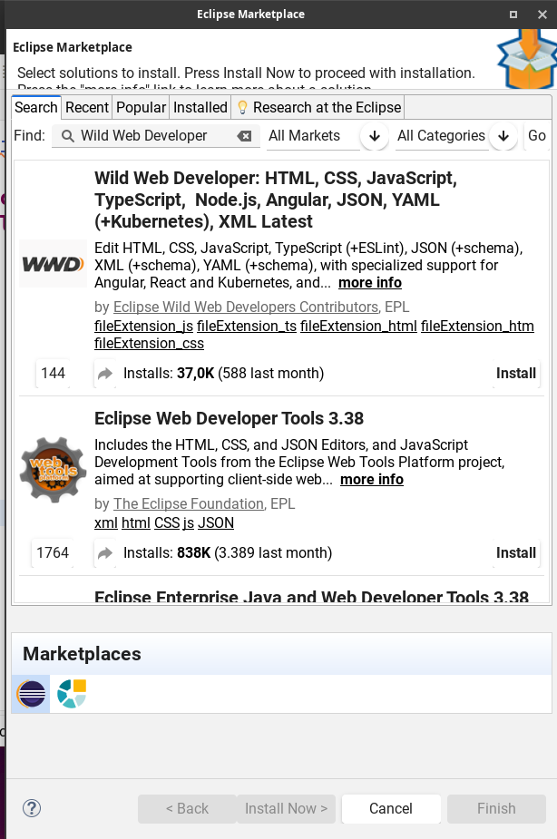

🎯 Objetivo
Instalar Eclipse IDE for Web Developers y configurar el plugin Wild Web Developer (o como alternativa Web Developer Tools) para trabajar con HTML, CSS y JavaScript. Finalmente, aplicarás lo aprendido realizando cambios sobre un proyecto web estático en GitHub y publicándolo con GitHub Pages.
Competencias
- Instalación y configuración de un IDE profesional.
- Gestión de plugins y extensiones en Eclipse.
- Uso básico de Git en un entorno de desarrollo.
- Edición de HTML/CSS/JS con asistencia del IDE.
Resultados de aprendizaje
- Configura entornos de desarrollo según requisitos del proyecto.
- Integra herramientas para productividad (validación, autocompletado, linting).
- Versiona cambios y publica en GitHub / GitHub Pages.
Tiempo estimado
Entre 60 y 90 minutos.
Puede variar según conexión y descargas.
✅ Requisitos previos
- SO: Windows, Linux o macOS.
- Permisos para instalar software.
- Cuenta en GitHub activa.
- Git instalado y configurado (usuario y email).
Comandos rápidos de Git
git config --global user.name "Nombre Apellidos"
git config --global user.email tu-email@ejemplo.com
# Clonar tu fork
git clone https://github.com/<tu_usuario>/mi-web-estatica
cd mi-web-estatica
# Comprobar estado y subir cambios
git status
git add .
git commit -m "feat: cambios practicados con Wild Web Developer"
git push origin main
🛠️ Pasos a seguir
-
Descargar e instalar Eclipse
Accede a https://www.eclipse.org/downloads/, elige Eclipse IDE for Web Developers e instala. Abre Eclipse y verifica que inicia correctamente.
Consejos de instalación
- En Windows: ejecuta el instalador como administrador si tienes errores de permisos.
- En Linux: descomprime el paquete tar.gz y ejecuta
eclipse. - En macOS: arrastra Eclipse a Aplicaciones y permite su apertura en Preferencias del Sistema si aparece un aviso de seguridad.
-
Instalar el plugin Wild Web Developer
En Eclipse, abre Help → Eclipse Marketplace…, busca Wild Web Developer, instala y reinicia si se solicita.
 -
Alternativa: instalar Web Developer Tools (WTP)
Si Wild Web Developer no funciona en tu equipo, puedes instalar Web Developer Tools, que también ofrece soporte básico para HTML, CSS y JS.
- En Eclipse: Help → Eclipse Marketplace….
- Busca Web Developer Tools y haz clic en Install.
- Reinicia Eclipse y verifica en Help → About Eclipse IDE → Installation Details.
Se recomienda Wild Web Developer, por ser más moderno y con mejor autocompletado. WTP queda como alternativa.
-
Comprobar instalación en Eclipse
Ve a Help → About Eclipse IDE → Installation Details. En la pestaña Installed Software verifica que aparecen Wild Web Developer (o Web Developer Tools). Toma una captura para la entrega.
-
Trabajar con el repositorio en GitHub
- Realiza un fork de profeInformatica101/mi-web-estatica en tu cuenta.
- Clona tu fork localmente.
- Abrir el proyecto en Eclipse:
- Usa File → Open Projects from File System… y selecciona la carpeta del repositorio clonado (
mi-web-estatica). - Si no lo detecta como proyecto, marca la opción New Project para crearlo y que incluya los archivos HTML/CSS/JS.
- Usa File → Open Projects from File System… y selecciona la carpeta del repositorio clonado (
- Realiza al menos 3 cambios usando el editor (Wild Web Developer / WTP):
- HTML: modifica encabezados o añade una sección con semántica correcta.
- CSS: añade una regla (por ejemplo, una clase utilitaria o un cambio de color).
- JS: escribe una función simple (p.ej., mostrar un mensaje en consola o manipular el DOM).
Verifica que funciona
- Crea o abre un archivo
.html,.csso.js. - Comprueba que hay autocompletado, validación y sugerencias (usa Ctrl+Espacio).
- Confirma y sube tus cambios a tu fork.
- Publicar tu web con GitHub Pages:
- En tu repositorio en GitHub, ve a Settings → Pages.
- En Build and deployment, selecciona Source: Deploy from a branch.
- Elige Branch: main y carpeta / (root); guarda.
- Asegúrate de que existe
index.htmlen la raíz del repo. - Espera a que aparezca el aviso de Deployment succeeded (puede tardar 1–3 min).
- La URL será:
https://<tu-usuario>.github.io/mi-web-estatica. Ábrela y comprueba que se ven tus cambios.
Checklist de progreso
0% completado
📤 Entrega (Moodle)
- Sube un documento PDF con:
- Capturas de cada paso de instalación y configuración.
- Captura de Help → About Eclipse IDE → Installation Details mostrando Wild Web Developer o WTP instalado.
- Evidencia del fork, clonación y subida de cambios (capturas de commits y vista del repo en GitHub).
- Enlace público a tu web publicada:
https://<tu-usuario>.github.io/mi-web-estatica. - Captura de pantalla de la web ya publicada con tus cambios visibles.
- Incluye una reflexión breve (5-8 líneas): dificultades, cómo las solucionaste y qué aprendiste.
Plantilla mínima sugerida
# Práctica 2 · Eclipse + Wild Web Developer
## 1. Instalación de Eclipse
(Capturas + notas)
## 2. Instalación y verificación de Wild Web Developer / WTP
(Capturas + About → Installation Details)
## 3. Trabajo con GitHub y publicación
(Fork + clone + cambios + commits + enlace público y captura)
## 4. Reflexión
(5-8 líneas)
📏 Rúbrica de evaluación (10 puntos)
| Criterio | Descripción | Puntos |
|---|---|---|
| Instalación de Eclipse | IDE instalado correctamente y evidencias claras | 2 |
| Plugins (Wild Web Developer / WTP) | Instalación verificada y funcionamiento básico (autocompletado) | 2 |
| Trabajo en HTML/CSS/JS | Se realizan cambios significativos en los tres frentes | 3 |
| Uso de Git/GitHub | Fork, clonación, commits descriptivos y push al repo | 2 |
| Reflexión | Análisis personal conciso y útil | 1 |
Puntos extra (≤ +0,5): buenas prácticas (commits atómicos, estructura semántica en HTML, comentarios claros en CSS/JS).
❓ FAQ / Ayuda rápida
El Marketplace no abre / no aparece el plugin
Comprueba la conexión a Internet, desactiva proxies si aplican y reinicia Eclipse. Alternativa: Install New Software… con update sites oficiales.
No puedo hacer push a mi repositorio
Verifica que has configurado credenciales o tokens de acceso en GitHub y que el remote apunta a tu fork.
El autocompletado no funciona
Asegúrate de que el archivo tiene extensión correcta y que el editor por defecto es Generic Editor (Wild Web Developer) o el de WTP. Revisa Preferences → General → Editors → File Associations y que Ctrl+Espacio esté activo en General → Keys.
GitHub Pages no muestra mi web
- En Settings → Pages usa Deploy from a branch, main y / (root).
- Verifica que existe
index.htmlen la raíz y que el despliegue dice succeeded. - Espera 1–3 minutos y recarga la URL
https://<tu-usuario>.github.io/mi-web-estatica(prueba incógnito).